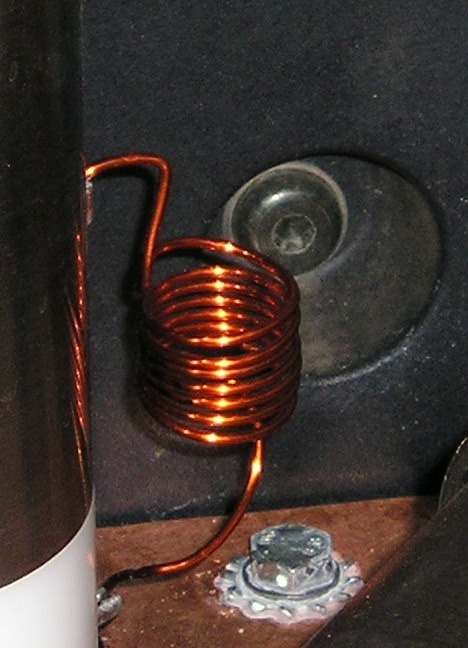
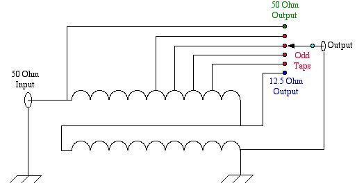
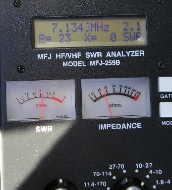
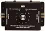
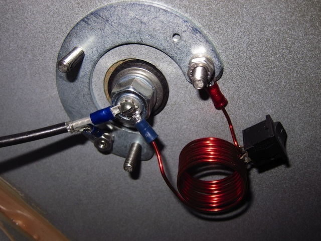

<img> as data-original-src.
Contents: Basics; Impedance Matching Methods ; Reactance vs. SWR; Inductive Matching; UNUN Matching; Capacitive Matching; Stub Matching; Odds & Ends;
 Matching a mobile antenna to the requisite 50 ohms is a requirement for several reasons. For example, modern solid state radios are designed to reduce their output power when the input SWR reaches ≈2:1. Some will handle a little more, some a little less. Once matched, the SWR doesn't have to be flat, so anything below 1.6:1 is close enough. Remember too, if the unmatched input impedance of your antenna, is less than 1.6:1 at resonance, you need a better antenna and/or mounting scenario.
Matching a mobile antenna to the requisite 50 ohms is a requirement for several reasons. For example, modern solid state radios are designed to reduce their output power when the input SWR reaches ≈2:1. Some will handle a little more, some a little less. Once matched, the SWR doesn't have to be flat, so anything below 1.6:1 is close enough. Remember too, if the unmatched input impedance of your antenna, is less than 1.6:1 at resonance, you need a better antenna and/or mounting scenario.
One very important point needs to be mentioned before proceeding. If you're using a remotely controlled HF mobile antenna like a Scorpion, the motor leads (and reed switch leads if used), and the coaxial feed must be properly choked. If they're not, you'll have terminal problems, and that's no pun! If you don't understand why choking is so important, read these articles: Antenna Controllers and Common Mode.
Further, improper choking of the motor leads will also affect the input impedance of your antenna. Therefore, the motor leads should be disconnected at the antenna before attempting to adjust any matching method. Once matched, if reconnecting the motor leads changes the matching point and/or SWR (no matter how small the change is!), it is a good indication that the motor lead choke impedance is too low.
Antenna manufacturers often tell their customers to cut their coax feed lines to a specific length in order to get a good match. All this does is mask the problem, by moving the SWR node to a different position along the feed line. While this may appear to fix the problem, it doesn't fool most automatic controllers. The truth is, if the antenna is properly matched, it doesn't make any difference how long (or short) the feed line is.
In the following sections, it is necessary to know the exact resonant point (X=Ø) of the antenna we're trying to match. This fact alone, should not infer that exact resonance is a requirement; it isn't! Rather, in this case, it is only a means of arriving at the end point (wide-band match). Once the matching is complete, whatever the SWR is (assuming it is under ≈1.6:1) is irrelevant. However, it should be mentioned that measuring the SWR at the transceiver end of the coax feed line will usually result in more overall loss, and may make matching nearly impossible to achieve. The reason is that any reactance (±jΩ) the antenna exhibits, will be transformed by the coax. While the SWR may be low at the transceiver end, it may be excessive at the antenna end, resulting in additional coax losses, and a possible increase in IMD.
It should be noted that solid state transceivers can generate excessive IMD levels (the FCC mandated ones) when the SWR is over 1.8:1 or so—yet another reason to properly impedance match antennas. While most mobile operators seemingly don't care about IMD, they should! Especially so when using an amplifier which amplifies the IMD along with everything else. In other words, garbage in, garbage out!

First, DC grounding helps control static discharges from the antenna, thus reducing some of the received hash we all put up with. Secondly it is a safety issue. If the antenna were to come into contact with a live overhead power line, DC grounding will help prevent damage to your equipment and perhaps to you as well.
Another reason is lightning safety, because DC grounding the element reduces the likelihood equipment damage should a strike occur.
Some amateurs are under the assumption that DC grounding an antenna (element) won't work, but this is not the case. Just because we DC ground the antenna element, doesn't mean it is RF grounded too! They also assume that grounding the antenna's mounting structure (bracket) will assure a low SWR and/or is a replacement for an adequate ground plane. Neither of these assumptions are true.
Unfortunately, way too much emphasis is placed on achieving a low SWR. Adding insult to injury, the methodology most amateurs use to check (or set) their SWR is incorrect. A fact which will soon become glaringly evident.

Again, you should look for the lowest reactance (X=Ø), not the lowest SWR when adjusting any matching device. Once the matching device is properly adjusted, the minimum SWR point on your transceiver (or external SWR meter) will be very close to the actual resonance point of the antenna.
Just to make sure this point is as clear as possible..... With respect to the input impedance of a mobile antenna that is lower than 50 ohms, when you adjust the antenna to a frequency lower than the true resonant point, the resistive component will increases faster than the reactive component, which causes the indicated SWR to decrease!
 You can demonstrate this for yourself by adjusting your antenna analyzer to the lowest reactance (X=Ø, or as close as you can get to it), and noting the SWR. Then, adjust the analyzer's frequency until the SWR is at its lowest, and note the reactance. It will mimic the chart shown upper right (the reactance is shown in red, and the SWR in blue).
You can demonstrate this for yourself by adjusting your antenna analyzer to the lowest reactance (X=Ø, or as close as you can get to it), and noting the SWR. Then, adjust the analyzer's frequency until the SWR is at its lowest, and note the reactance. It will mimic the chart shown upper right (the reactance is shown in red, and the SWR in blue).
The two photos depict a 40 meter resonant antenna before (left), and after (right) proper matching. Please note that the right photo shows a few ohms of reactance. This is due to basic accuracy of the instrument in question (≈±5%). Make note of the frequency shown on the 259B. This is indicative of what you'll see while you're in the process of of adjusting an antenna matching coil or device. It is included here, because (as noted above) adjusting a remotely tuned HF antenna's matching coil is the prime use for an antenna analyzer in a mobile scenario.
The reactance readout on an antenna analyzer may be effected by a nearby broadcast transmitter. Here is how to check. With the MFJ-259B connected to your antenna, push the mode switch until the frequency counter displays. If the SWR meter significantly deflects, you probably have BCI. MFJ does sell an optional BCI filter unit for the 259B which eliminates the problem.
 If you're planning on using a remotely tuned antenna, and an automatic antenna controller, then inductive matching is your only choice if you're seeking fully automatic operation.
If you're planning on using a remotely tuned antenna, and an automatic antenna controller, then inductive matching is your only choice if you're seeking fully automatic operation.
Inductive matching works by borrowing a small amount of capacitive reactance from the antenna (by tuning the antenna slightly above the actual transmitting frequency). This borrowed capacitance, and the shunt matching coil's inductance, form a highpass, LC network which transforms the antenna's low impedance (typically 25 ohms or so) to that of the 50 ohm feed line. Installed and adjusted properly, shunt matching will provide a decent match (<1.6:1) over several octaves. Enclosing the matching coil, even in plastic, will affect the frequency versus reactance of the coil, effectively reducing its bandwidth.
Further, the coil must be as clear of surrounding metal as possible. For example, factory supplied shunt coils are often mounted against the antenna's mounting bracket. For best results, these coils should be relocated. You should avoid commercial units which surround the mast, or ones which short out a portion of the coil to achieve a match, as this reduces the effective Q of the coil which increases overall losses. Obviously then, open air, shunt matching coils provide the best match, and least loss of any other matching methodology.
 At left is a photo of the MFJ-908 L match unit. Building one rather than buying one won't save you any money, but you might learn how they work if you do. The ARRL Antenna Handbook is a good place to start.
At left is a photo of the MFJ-908 L match unit. Building one rather than buying one won't save you any money, but you might learn how they work if you do. The ARRL Antenna Handbook is a good place to start.
 However, you typically don't need a switched inductor like the aforementioned MFJ unit, unless you operate 160 meters (see Odds & Ends below). Instead a simple inductor, like the one shown in the right photo (or the upper right pictorial), will suffice. One end is attached to the antenna feed, and the other end is connected to ground. The ground end of the coil should be collocated with the coax shield ground.
However, you typically don't need a switched inductor like the aforementioned MFJ unit, unless you operate 160 meters (see Odds & Ends below). Instead a simple inductor, like the one shown in the right photo (or the upper right pictorial), will suffice. One end is attached to the antenna feed, and the other end is connected to ground. The ground end of the coil should be collocated with the coax shield ground.
The coil at right has 9 turns, is 1 inch inside diameter, and wound with #14 Thermalese® (enameled) wire. The coil's form factor should be kept close to 1:1 (length to diameter). Long skinny coils do not work nearly as well. You can also use building wire, but it is a little harder to work with. In actual use, the turns are spaced a little further apart to adjust the inductance. The coil needs to be about 1 uH, but in the real world, the value may be between .5 uH and 1.5 uH depending on the actual input impedance at resonance.
There is a specific procedure which must be followed if proper adjustment of a shunt matching coil is to be achieved, and here it is: Antenna Coil Adjustment.
Lastly, several commercial versions of the screwdriver antenna have machined-in matching coils which are fixed in value, and therefore cannot provide an ideal match over the entire resonant frequency span of the antenna. Although these antennas can be modified to use an adjustable coil, it's best to avoid the buying the problem in the first place.
 You can also use an UNUN (UNbalanced to UNbalanced) RF transformer like the MFJ-907 unit shown at left. Like the LC network above, it provides a DC ground, and the requisite impedance match. If you're using different length monobanders, then an UNUN is the preferred matching method. However, if you use a remotely controlled antenna, you will have to change taps between bands. In most cases, you can use one tap for 80 and 40, another for 20 and 17, and straight through for 12 and 10. If you don't like the idea of changing taps, then make one of the aforementioned inductors.
You can also use an UNUN (UNbalanced to UNbalanced) RF transformer like the MFJ-907 unit shown at left. Like the LC network above, it provides a DC ground, and the requisite impedance match. If you're using different length monobanders, then an UNUN is the preferred matching method. However, if you use a remotely controlled antenna, you will have to change taps between bands. In most cases, you can use one tap for 80 and 40, another for 20 and 17, and straight through for 12 and 10. If you don't like the idea of changing taps, then make one of the aforementioned inductors.
If you want to built your own UNUN, the schematic is at right (click to enlarge). An F114-67 ferrite core, a few feet of #14 enameled copper wire (enough for 9, bifilar turns), a small box to mount it in, and you're home free. I prefer to cover the core with 3M #27 glass tape as it makes winding easier, but it isn't a requirement.
Capacitive matching has a major shortcoming—the antenna is not DC grounded! Secondly, as the frequency increases, the reactance (in ohms) decreases, which means you have to use a different value capacitor for each band, and sometimes within a band. Obviously, if you're using an automatic antenna controller, this is a severe drawback! If you're using capacitive matching, you should give serious thought into replacing it with inductive matching.
Any of the above matching schemes can be used to match a monoband antenna. However, there is another way that not only performs a conjugate match, but extends the bandwidth as well! Enter the shorted 1/4 wave stub! The drawback to this type of match is the fact is it monoband in nature. While you can cascade (parallel) stubs in some cases, the mechanical considerations become a headache. If nothing else, it is a lot less complicated than using an internal or external auto-coupler with about the same results.
Depending on a lot of factors not in evidence, the technique can extend the bandwidth by 2 or 3 times. The reason this is so, is the reactance curve of a 1/4 wave shorted stub vs. frequency is opposite that of the antenna. If you want to know more about how they work, Chapter 11 of the ARRL Handbook is the place to go.
Antennas with extended coverage down to 160 meters, may require an MFJ-908 L or similar switched inductor. The reason is, a 160 meter loading coil is about 5 times larger (in inductance) than an 80 meter loading coil. All else being equal, the coil losses will more than double, and therefore the input impedance will be close to 50 ohms (no matching needed). There's a hidden factor at work here too. A 160 through 10 meter remotely controlled antenna, will exhibit more coil loss at any frequency, than an 80 through 10 meter antenna. Potential purchasers should be aware of this fact.

Either an internal or external auto coupler may be used to match a mobile antenna's input impedance to 50 ohms. And, they can be used to extend the bandwidth of a monoband antenna. However, using one with a remotely tuned antenna presents some operational problems. If you use one, keep the following in mind.
The antenna in question should be adjusted to resonance (lowest SWR is close enough) before the auto coupler is turned on. This is especially important with external couplers with their greater matching range. Under the right circumstances, failing to tune the antenna close to the operating frequency can cause the RF voltage to be high enough to arc over most base insulators and/or the coil turns!
{kind=link}
{kind=link}
{kind=link}
{kind=link}
{kind=link}